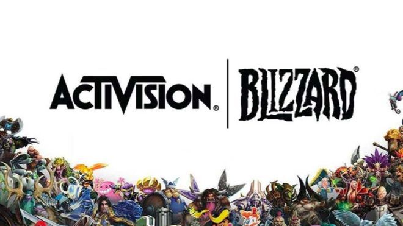

Fejlesztők

|
|

|

|
|
|---|---|---|---|---|
| Activision | Infinity Ward | Treyarch | Sledgehammer Games | Raven Software |
Az Activision a CoD franchise tulajdonosa, a fentebb látható stúdiók, pedig a nagyobb stúdiók, akik a CoD-ok többségén dolgozott. Kisebb studiók, akik néhánynál besegítettek a(z): n-Space, Gray Matter Interactive, Ideaworks Game Studio, Pi Studios, Rabellion Developments és a Spark Unlimited. Az Activision összállt a Blizzard Entertainment-el, és így a Black Ops 4-nél újabb CoD-ok nem Steam-en, hanem a Battle.net-en találhatóak meg és ugye így a Blizzard szervereit használják az új CoD-ok, amik néha szeretnek meghalni, de viszonylag stabilak mostmár.
